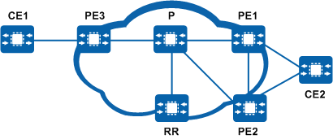

Configuring Delayed Response to BGP Next Hop Recursion Changes
Prerequisites
Before configuring delayed response to BGP next hop recursion changes, you have completed the following task:
Context
As shown in Figure 1, PE1, PE2, and PE3 are the clients of the RR, and CE2 is dual-homed to PE1 and PE2, which advertise their routes destined for CE2 to the RR. The RR preferentially forwards the route advertised by PE1 to PE3. PE3 has only one route to CE2 and advertises this route to CE1. After the route exchange, CE1 and CE2 can communicate. With delayed response to BGP next hop recursion changes enabled, if PE1 fails, PE3 detects that the next hop is unreachable and instructs CE1 to delete the route to CE2, interrupting traffic. After BGP route convergence is complete, the RR preferentially selects the route advertised by PE2 and sends an Update message to PE3. PE3 then advertises this route to CE1, restoring traffic forwarding. During this process, BGP route convergence is rather slow, and a high volume of traffic will be lost.
If delayed response to BGP next hop recursion changes is enabled on PE3, PE3 does not reselect a route or send a withdraw message to CE1 immediately after detecting that the route to PE1 is unreachable. After BGP convergence is complete, the RR preferentially selects the route advertised by PE2 and sends it to PE3. PE3 then reselects a route and sends an Update message to CE1, restoring traffic forwarding. After delayed response to BGP next hop recursion changes is enabled on PE3, PE3 does not need to send withdrawn routes or delete the local routes. This delayed response helps speed up BGP route convergence and reduces traffic loss.


Delayed response to BGP next hop recursion changes applies only to scenarios where multiple links exist between the downstream device and the same destination. If the downlink is unique and a link switchover cannot be performed when the link fails, configuring delayed response to BGP next hop recursion changes will cause additional traffic loss.
Procedure
- Enter the system view.
system-view - Enter the BGP view.
bgp as-number
- Configure delayed response to next hop recursion changes.
nexthop recursive-lookup delay [ delay-time ]
If the nexthop recursive-lookup delay command is run, the device delays responses to all recursion changes (including critical and non-critical ones). If the nexthop recursive-lookup non-critical-event delay command is run, the device delays responses only to non-critical BGP recursion changes. If both the commands are run, the nexthop recursive-lookup non-critical-event delay command takes precedence over the nexthop recursive-lookup delay command.
If both the commands are run, the delay time set using the nexthop recursive-lookup non-critical-event delay command cannot be shorter than that set using the nexthop recursive-lookup delay command.
Verifying the Configuration
After configuring delayed response to BGP next hop recursion changes, you can run the following commands to check the previous configuration.
- Run the display current-configuration configuration bgp | include nexthop recursive-lookup delay command to view information about the delay in responding to a next hop recursion change.
- Run the display current-configuration configuration bgp | include nexthop recursive-lookup non-critical-event delay command to view information about the delay in responding to a non-critical BGP recursion change.